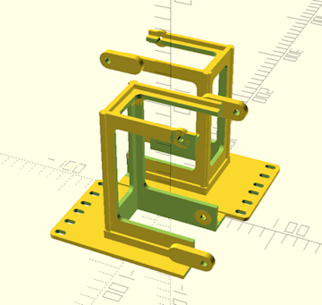
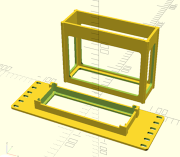

Home
Home

Configuration Options :: 3D Printer Support
Special settings for supporting larger or smaller 3D printers.
For a list of maximum device sizes and the print volumes they require, see Maximum Supported Sizes.
split cage into two halves
This setting instructs CageMaker PRCG to split the completed cage into two pieces and add tabs and corresponding slots to enable bolting the pieces together. Note that the split will happen at the center of the cage proper, even if its offset value has been changed and the cage is off-center relative to the faceplate, and if the extra support option is enabled the split will also be along the center of those extra support structures. This allows printing cages on 3D printers with smaller build volumes - a 2U tall, 150mm deep, full-width cage for a 10" rack can be printed within a build volume of 180mm3.
This option pairs very well with add alignment pin holes as well as extra support.

Enabling this option overrides the print cage separately setting.
This is a tab-fits-into-slot style arrangement, and while the tabs are slightly undersized so as to fit into the corresponding slots, some modifications such as sanding may be required.
Make sure to change the tap or heat set holes setting to select the fasteners to use to bolt these together. If a tapped or heat-set hole size is selected, it will be used for the holes in the slots into which the tabs fit, but the holes in the tabs will be whatever the close-fit clearance size is for the selected fastener's thread size. For example, if "M5 tapped (4.4mm hole)" is selected, the slot holes will be that size and the corresponding tab holes will automatically be set to "M5 clearance (5.25mm hole)". Selecting a clearance hole size will use that hole size for both tabs and slots.

print cage separately
This setting will trigger the separation of the cage proper from the faceplate, with the cage being flipped upside-down and placed next to the faceplate. This substantially reduces print time and filament consumption (by around 15% and 25%, respectively, for the default cage settings) but requires a large print volume and makes an overall weaker cage that has to be assembled prior to use. The two parts can be assembled with adhesive, ideally one that has strong bond strength with the plastic used to 3D print the parts.
This is designed for larger printers, as the cage generator cannot divide the print further to fit smaller print volumes without ruining its structural integrity.
Enabling split cage into two halves overrides this setting.
The snap fit tolerance setting adjusts the sizing of the sockets on the back of the faceplate into which the cage's legs will attach. This should be a snug fit but not so tight that assembly is difficult.

 Back To Top
Back To Top Navigate Site
Navigate Site Support This Project
Support This Project
 Community
Community
 Legal Notices & Information
Legal Notices & Information
 Copyright/Trademarks
Copyright/Trademarks